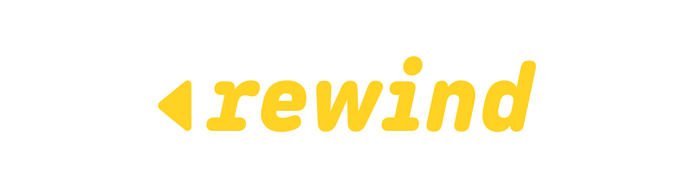
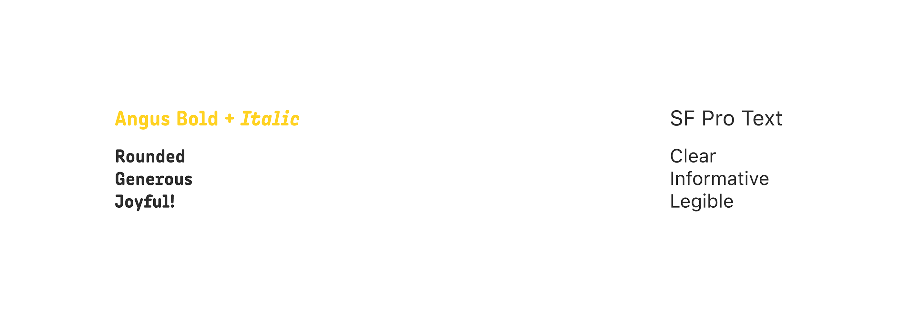
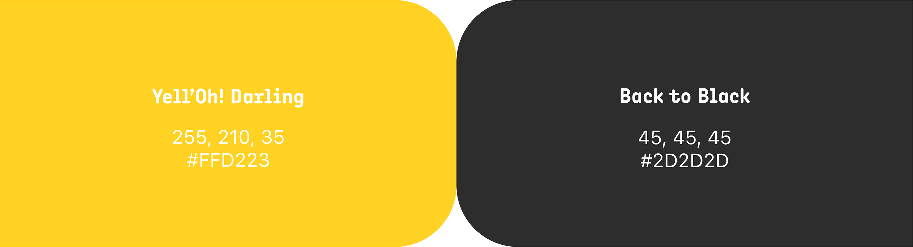
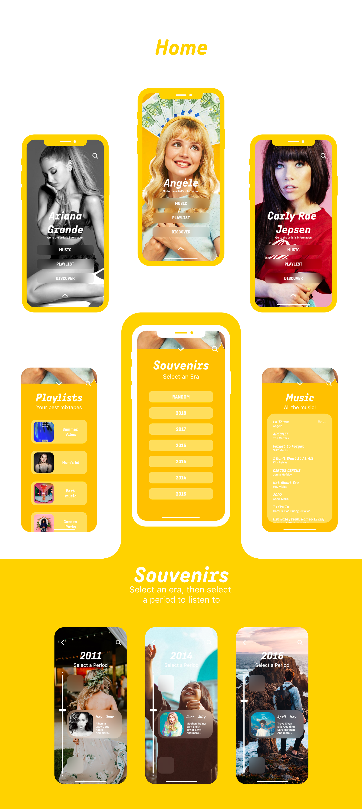
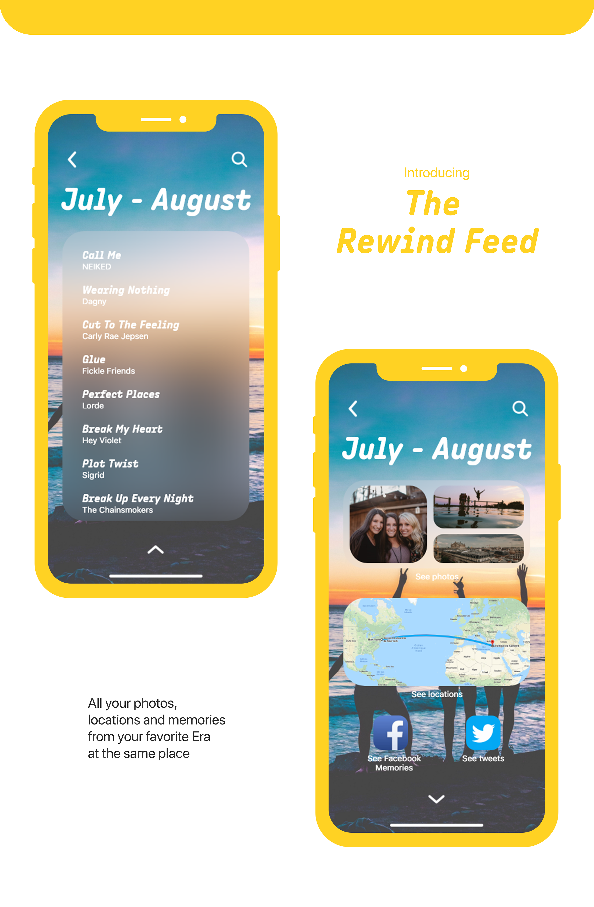
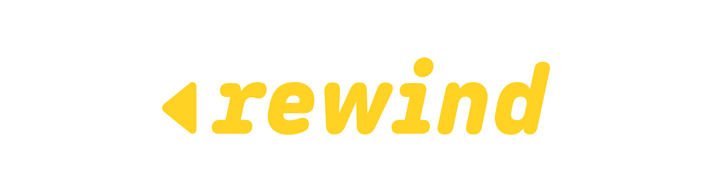
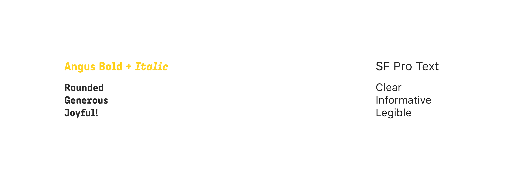
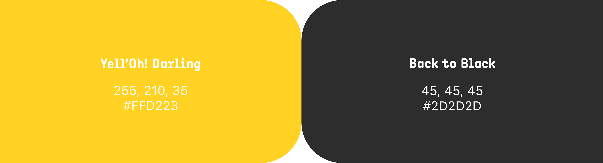
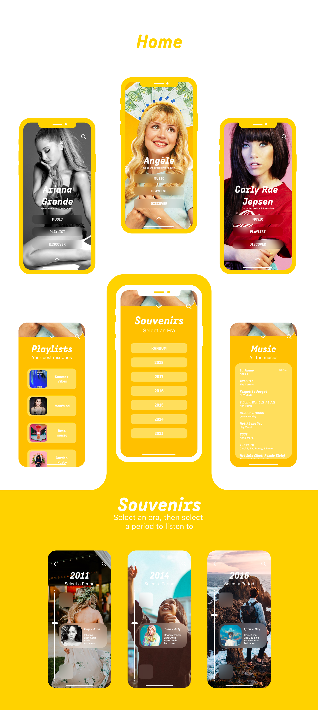
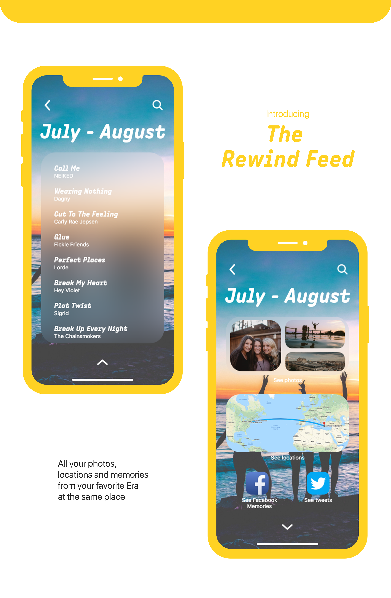

Morgan Gomez
Rewind
Identity, video
I always thought that music was very important to remember. To remember moments, people, locations, events... I'm convinced that it triggers memories. But all the magic happens when you find a music again that you thought you forgot. Then, everything comes back to your mind. People, smells, the whole atmosphere... It's just like you are coming back to that very moment. Just like a rewind.
But these moments are way too rare.
That's why I wanted to design an app dedicated to all your music-related memories : Rewind. It automatically creates playlist with all the music you were listening to at some point. It also associates the playlists with the photos you took at this moment, the places you were located to, and with the social-media memories.
Say hi to the most nostalgic, yet modern music player.
 








